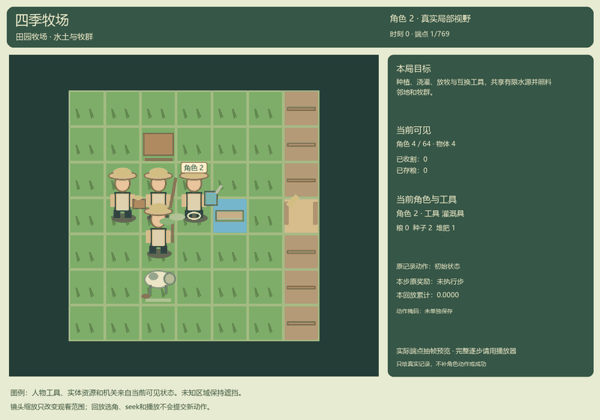
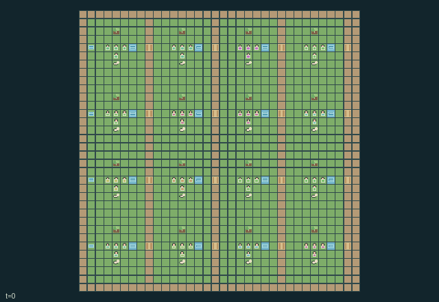

GI225 · Seasonal Pasture Commons

Original recording scope: Role 2 sampled actual-endpoint preview; full endpoints in the player · Mode: Actual diagnostic replay
Additional generated state replay (different trajectory / full-state debug)

Give every homestead at least two stored grain while keeping all herds healthy and disease-free; manage competing water, pasture and corridor uses.
Identity and original contract
64 independently actionable roles; 19 discrete commands per role; 1026 native observation columns per role; original horizon 768 steps. Declared per-step reward range: -1 to 2. Observation regime: partially_observable.
Source SHA-256: ad26795944fb92b0411a172a94432ccf5493e1bb4af1900f6d358e7b0f6b7ce1
The objective, rewards, population, map and horizon remain original. A preview is not a success claim.
Objective and gameplay
Give every homestead at least two stored grain while keeping all herds healthy and disease-free; manage competing water, pasture and corridor uses.
Irrigating one plot consumes a shared row reservoir and sends one moisture downstream only through an open homestead gate. Herds physically deplete shared pasture and transmit disease by proximity. Gates direct migration and wear out; reserves improve recovery but forbid grazing. Tool exchange changes another actor's legal affordances.
- 64 actors form sixteen homesteads. Tools 0 farmer, 1 herder, 2 irrigator, 3 steward can be exchanged nearby or cycled at home.
- Plant within three cells of a plot. Six moist growth ticks make a ripe crop; harvest creates two grain and one seed. Heat can wither unwatered immature crops.
- Irrigation at a trough spends two units from its row reservoir. An open downstream gate shares one moisture with the next homestead.
- Drive a nearby herd in the actor's facing direction. Grazing every four ticks consumes actual cell grass; protected reserves cannot be grazed.
- Spring and autumn restore pasture every 12 ticks; protected reserves restore it every eight. Fertilizer uses collected manure.
- Nearby herds spread disease every eight ticks. An irrigator can spend compost to treat a herd; distance and routes can limit contact.
- Gate crossings wear hinges. Occupied gates cannot close; worn empty gates close until repaired. A closed gate also stops downstream irrigation sharing.
- Store harvested grain, feed hungry herds, or keep it for later work. Household welfare is rewarded periodically; every pantry and herd must meet the stated natural finish rule.
Ending: Natural completion when all pantry >= 2, all herd health >= 4, and no herd disease; otherwise truncate at 768. Herd health is bounded below by 1.
What this game explores
Resource commons & externalities: An action changes a persistent resource or burden that another role also encounters. Compare extraction with maintenance and record the downstream resource trajectory.
Complementary production & service: A useful outcome requires ordered stages, scarce equipment or another role's capability. Measure real completed products and resource circulation rather than counting intermediate actions as success.
Joint transport & shared access: Positions, load geometry, occupancy and persistent access constrain whose action can succeed next. Distinguish physical handoff, shared controls and simultaneous force from a cosmetic cooperation label.
These are questions supported by rule structure, not observed learning effects.
Play it: operating walkthrough
crucibles play --game gi225Keep Python running and open its printed address. Select this game, set a seed and press Create session. The game itself is always English.
Assign a role range to Host with Assign / take over, or Assign all roles. Invite a second participant with Create player invitation, then assign a disjoint subset. Every original role is available.
For every owned role choose a legal command and press Queue. Arrow keys / WASD queue a declared directional action for the current role camera when available. Space or Advance one joint step advances everyone together. Non-directional games use the selectors.
Unqueued roles use the labelled untrained uniform-legal policy. Take over or release roles before the next step without resetting. Full-state debug is privileged and permanently logged; role cameras preserve permissions. Close the session to retain logs. Server restart does not restore sessions.
Complete command reference
IDs and English labels exactly match the manifest. Availability depends on role, resources, location and phase. An available action can still have no productive effect.
0·Wait
1·Face or move north
2·Face or move east
3·Face or move south
4·Face or move west
5·Plant nearby plot with farmer
6·Irrigate at trough with irrigator
7·Harvest ripe nearby crop
8·Feed nearby herd with grain
9·Drive nearby herd forward with herder
10·Toggle adjacent gate
11·Reserve current pasture with steward
12·Fertilize current pasture with compost
13·Tend nearby herd with irrigator
14·Exchange tools with nearest actor
15·Cycle tool at home
16·Collect nearby herd manure
17·Repair adjacent gate with compost
18·Store grain at home pantry
Roles and capability identifiers
These original role names describe capabilities, not interchangeable skins. Check each owned role's legal selector before planning handoffs.
agent_0·crew 0 / initial farmer / actor 0
agent_1·crew 0 / initial herder / actor 1
agent_2·crew 0 / initial irrigator / actor 2
agent_3·crew 0 / initial commons steward / actor 3
agent_4·crew 1 / initial farmer / actor 4
agent_5·crew 1 / initial herder / actor 5
agent_6·crew 1 / initial irrigator / actor 6
agent_7·crew 1 / initial commons steward / actor 7
agent_8·crew 2 / initial farmer / actor 8
agent_9·crew 2 / initial herder / actor 9
agent_10·crew 2 / initial irrigator / actor 10
agent_11·crew 2 / initial commons steward / actor 11
agent_12·crew 3 / initial farmer / actor 12
agent_13·crew 3 / initial herder / actor 13
agent_14·crew 3 / initial irrigator / actor 14
agent_15·crew 3 / initial commons steward / actor 15
agent_16·crew 4 / initial farmer / actor 16
agent_17·crew 4 / initial herder / actor 17
agent_18·crew 4 / initial irrigator / actor 18
agent_19·crew 4 / initial commons steward / actor 19
agent_20·crew 5 / initial farmer / actor 20
agent_21·crew 5 / initial herder / actor 21
agent_22·crew 5 / initial irrigator / actor 22
agent_23·crew 5 / initial commons steward / actor 23
agent_24·crew 6 / initial farmer / actor 24
agent_25·crew 6 / initial herder / actor 25
agent_26·crew 6 / initial irrigator / actor 26
agent_27·crew 6 / initial commons steward / actor 27
agent_28·crew 7 / initial farmer / actor 28
agent_29·crew 7 / initial herder / actor 29
agent_30·crew 7 / initial irrigator / actor 30
agent_31·crew 7 / initial commons steward / actor 31
agent_32·crew 8 / initial farmer / actor 32
agent_33·crew 8 / initial herder / actor 33
agent_34·crew 8 / initial irrigator / actor 34
agent_35·crew 8 / initial commons steward / actor 35
agent_36·crew 9 / initial farmer / actor 36
agent_37·crew 9 / initial herder / actor 37
agent_38·crew 9 / initial irrigator / actor 38
agent_39·crew 9 / initial commons steward / actor 39
agent_40·crew 10 / initial farmer / actor 40
agent_41·crew 10 / initial herder / actor 41
agent_42·crew 10 / initial irrigator / actor 42
agent_43·crew 10 / initial commons steward / actor 43
agent_44·crew 11 / initial farmer / actor 44
agent_45·crew 11 / initial herder / actor 45
agent_46·crew 11 / initial irrigator / actor 46
agent_47·crew 11 / initial commons steward / actor 47
agent_48·crew 12 / initial farmer / actor 48
agent_49·crew 12 / initial herder / actor 49
agent_50·crew 12 / initial irrigator / actor 50
agent_51·crew 12 / initial commons steward / actor 51
agent_52·crew 13 / initial farmer / actor 52
agent_53·crew 13 / initial herder / actor 53
agent_54·crew 13 / initial irrigator / actor 54
agent_55·crew 13 / initial commons steward / actor 55
agent_56·crew 14 / initial farmer / actor 56
agent_57·crew 14 / initial herder / actor 57
agent_58·crew 14 / initial irrigator / actor 58
agent_59·crew 14 / initial commons steward / actor 59
agent_60·crew 15 / initial farmer / actor 60
agent_61·crew 15 / initial herder / actor 61
agent_62·crew 15 / initial irrigator / actor 62
agent_63·crew 15 / initial commons steward / actor 63
Information and observation permissions
Self fields and declared public counters/charts are exact. For each entity slot, visibility is active AND Chebyshev distance <= 3 from the role's current position; hidden slots have visible=0 and all values zero. Actor slots use the same radius. Patches cover dx,dy -3..3 in row-major order, outside=-1. Public static bounds, indexing and action meanings do not expose hidden current state. Legal masks are native affordance information; no renderer-only policy information. Human and policy actors use the same scalar action and transition.
The GIF is full-state debug and may reveal hidden entities or private state. Train on obs[agent], not the picture, state tree or another role's private row. Field slices and visibility are in the original manifest.
Reinforcement-learning integration
import jax
from crucibles_jaxmarl import make
env = make("gi225")
key = jax.random.PRNGKey(0)
key, rk, ak, sk = jax.random.split(key, 4)
obs, state = jax.jit(env.reset)(rk)
actions = env.sample_actions(ak, state)
obs, state, rewards, dones, info = jax.jit(env.step_env)(sk, state, actions)
done = dones["__all__"]Observations are float32 vectors of width 1026; actions are scalar int32; masks have 19 entries. Supply all 64 roles each transition. Masked sampling is an engineering reference, not a trained learner.
step_env retains terminal data without reset. step performs outer autoreset and keeps terminal data in info["raw_state"] and info["raw_observation"]. Use dones["__all__"] for episode boundaries; separate completion, failure and time limit in analysis.
JIT or vmap equal identities and shapes. Split independent reset, policy and transition keys. Group different shapes explicitly; do not shrink the population or horizon. Host rendering stays outside training.
Training questions and fair evaluation
Define valid completion from the objective before fitting. Preserve original rewards and also report real deliveries/services, losses, resource state, unresolved episodes and per-role returns. Animation is not a reward signal.
An action changes a persistent resource or burden that another role also encounters. Compare extraction with maintenance and record the downstream resource trajectory.
A useful outcome requires ordered stages, scarce equipment or another role's capability. Measure real completed products and resource circulation rather than counting intermediate actions as success.
Positions, load geometry, occupancy and persistent access constrain whose action can succeed next. Distinguish physical handoff, shared controls and simultaneous force from a cosmetic cooperation label.
Compare memory, communication or centralized critics under matched actor information. Declare critic access; keep actor inputs role-filtered. Match partner/opponent distributions, masks, compute and checkpoint selection. Final tests never enter fitting or selection.
Independent training runs or source-pairing blocks are inferential units; episodes from one policy are not independent training replications. Save hashes, keys, versions, device, time and cost. Negative, zero, failed and indeterminate outcomes are valid. No trained checkpoint or target score is supplied.
Classification and evidence
Overlapping editorial labels are reading aids, not proof of novelty, difficulty, strategic equivalence or learning effects.
- Resource commons & externalities
- Evidence
manifest.task.objective: Give every homestead at least two stored grain while keeping all herds healthy and disease-free; manage competing water, pasture and corridor uses.
- Evidence
manifest.task.interaction: Irrigating one plot consumes a shared row reservoir and sends one moisture downstream only through an open homestead gate. Herds physically deplete shared pasture and transmit disease by proximity. Gates direct migration and wear out; reserves improve recovery but forbid grazing. Tool exchange changes another actor's legal affordances.
- Evidence
manifest.actions.5: Plant nearby plot with farmer
- Complementary production & service
- Evidence
manifest.task.observation_access: Self fields and declared public counters/charts are exact. For each entity slot, visibility is active AND Chebyshev distance <= 3 from the role's current position; hidden slots have visible=0 and all values zero. Actor slots use the same radius. Patches cover dx,dy -3..3 in row-major order, outside=-1. Public static bounds, indexing and action meanings do not expose hidden current state. Legal masks are native affordance information; no renderer-only policy information. Human and policy actors use the same scalar action and transition.
- Evidence
manifest.actions.17: Repair adjacent gate with compost
- Evidence
scene.rules.6: Gate crossings wear hinges. Occupied gates cannot close; worn empty gates close until repaired. A closed gate also stops downstream irrigation sharing.
- Joint transport & shared access
- Evidence
manifest.task.interaction: Irrigating one plot consumes a shared row reservoir and sends one moisture downstream only through an open homestead gate. Herds physically deplete shared pasture and transmit disease by proximity. Gates direct migration and wear out; reserves improve recovery but forbid grazing. Tool exchange changes another actor's legal affordances.
- Evidence
manifest.actions.10: Toggle adjacent gate
- Evidence
manifest.actions.17: Repair adjacent gate with compost
Source, receipts and preview limits
The additional generated state GIF replays saved untrained legal actions through the original kernel. At most 25 actual endpoints include initial and terminal state; no invented interpolation. It is full-state debug, not the role observation. Where an original scene preview exists, it is displayed first with its own recorded information scope. The two recordings may use different trajectories and views.
Original source, observation slices, manifest and mechanism
Native receipt · Presentation receipt
Engineering passes do not establish learning. Nonzero floating differences remain recorded and undetermined; no new tolerance was introduced. Human scores remain unverified.